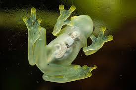
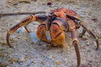

This page will tell you about my favorite animals
Home
The Glass Frog is one of my favorite animals because their skin and muscle tissue are translucent, revealing their internal organs—including their beating heart and digestive tract

The Coconut Crab is one of my favorite animals because it stands out as one of nature's most impressive evolutionary marvels due to its extreme size, immense power, and unique land-dwelling lifestyle.s
